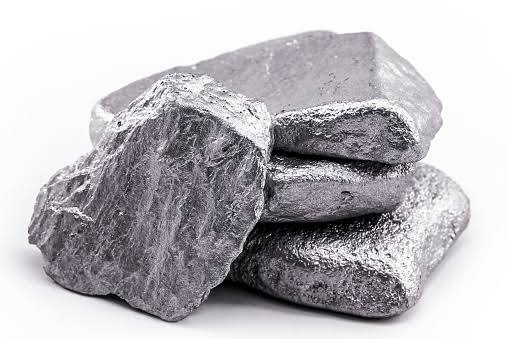

Cério
O cério é um elemento químico representado pelo símbolo Ce.
Possui número atômico 58.
Ele pertence ao grupo dos lantanídeos e possui diversas aplicações.
Símbolo: Ce
Número atômico: 58
Grupo: Lantanídeos
Estado físico: Sólido
Aparência: Metal prateado
O cério é utilizado em catalisadores, especialmente em aplicações automotivas.
Compostos de cério são usados no polimento de vidros e superfícies.
O cério pode ser utilizado na fabricação e tratamento de determinados vidros.
Também pode fazer parte de algumas ligas metálicas.
O cério pode participar de ligas capazes de produzir faíscas quando são raspadas ou friccionadas.
O cério pode apresentar principalmente os estados de oxidação +3 e +4.
O cério é encontrado principalmente em minerais como monazita e bastnasita.
Seu nome foi inspirado em Ceres, um planeta anão localizado no Sistema Solar.
Sou estudante da Etec de Guaianazes e este site foi desenvolvido como parte de um trabalho escolar sobre o elemento químico Cério.
Durante o desenvolvimento do projeto, utilizei HTML, CSS e Bootstrap para criar e organizar o site.
Professor / Administrador
Professor / Administrador